生成时间2026-04-29 16:35:46
帧源raw_world
重复次数1
锁定响应图combined_depth_ir_darkline
峰值诊断图
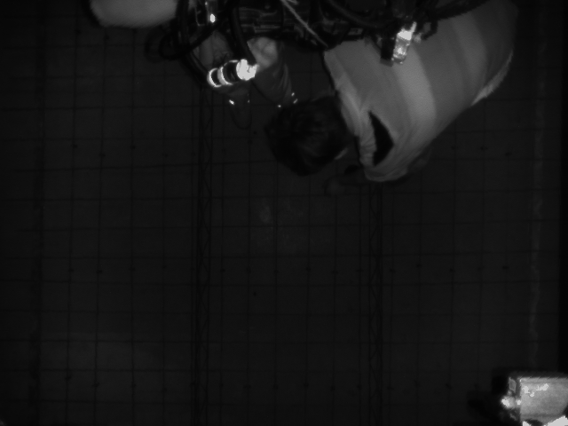
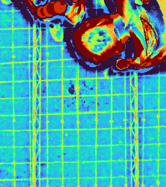
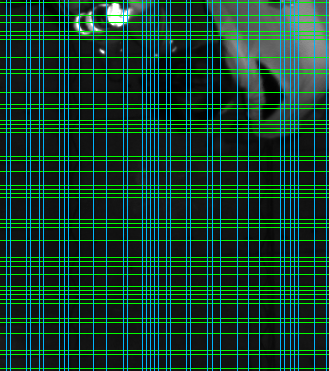
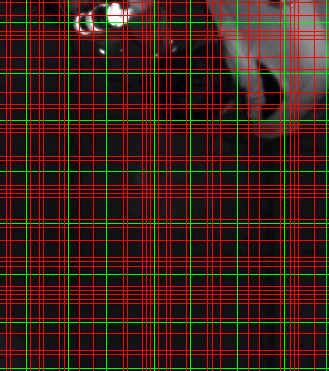
| 工序 | 消融项 | 均值 ms | 中位 ms | 点数 | 平均漂移 px | 最大漂移 px | 点数变化 | 结论 |
|---|---|---|---|---|---|---|---|---|
| 基准 | 全流程 | 800.71 | 800.71 | 56 | 0.00 | 0.00 | 0 | 基准 |
| 连续验证 | 保持关闭连续钢筋条验证 | 824.58 | 824.58 | 56 | 0.00 | 0.00 | 0 | 可跳过 |
| 间距筛选 | 去掉 spacing prune | 52.05 | 52.05 | 1218 | 227.05 | 378.70 | 1162 | 不能删 |
| peak 支撑 | 去掉 peak 支撑过滤 | 88.81 | 88.81 | 56 | 21.66 | 24.70 | 0 | 不能删 |
| 局部 refine | 去掉局部峰值 refine | 784.69 | 784.69 | 56 | 0.00 | 0.00 | 0 | 可跳过 |
| profile-only | 只保留 profile 周期 + spacing | 84.45 | 84.45 | 56 | 21.66 | 24.70 | 0 | 不能删 |
| profile-only | 只保留 profile 周期原始线 | 44.29 | 44.29 | 999 | 232.47 | 466.62 | 943 | 不能删 |
基准
全流程
当前主链：组合响应、固定行/列 profile 峰值、spacing 收束；梁筋±10cm范围只在最终点级过滤。
基准
mean 800.71 ms
median 800.71 ms
56 points
drift 0.00 / 0.00 px
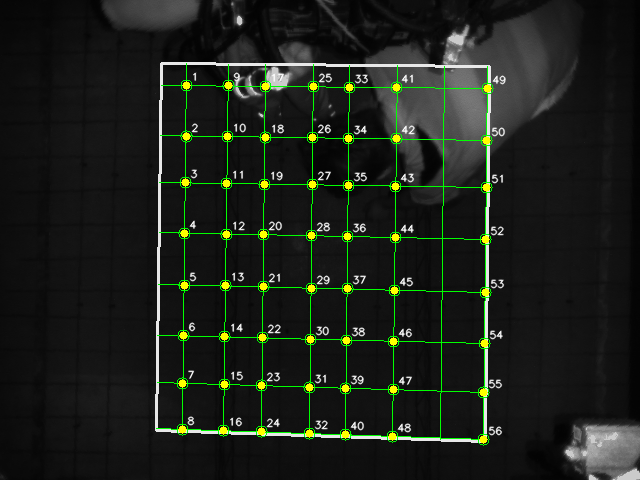
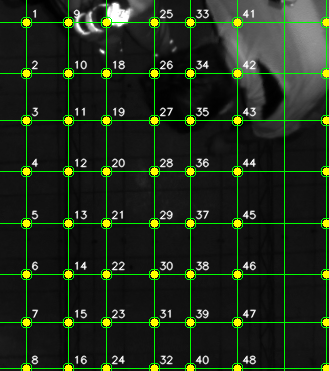
线族明细
[{"angle_deg": 0.0, "line_rhos": [22.0, 73.0, 120.0, 171.0, 223.0, 274.0, 322.0, 368.0], "peak_rhos": [2.0, 15.0, 22.0, 31.0, 35.0, 39.0, 57.0, 69.0, 73.0, 92.0, 104.0, 108.0, 120.0, 124.0, 128.0, 132.0, 156.0, 160.0, 171.0, 185.0, 189.0, 193.0, 197.0, 219.0, 223.0, 227.0, 240.0, 257.0, 261.0, 266.0, 274.0, 286.0, 290.0, 294.0, 299.0, 303.0, 318.0, 322.0, 333.0, 350.0, 354.0, 368.0], "continuous_rhos": [2.0, 15.0, 22.0, 31.0, 35.0, 39.0, 57.0, 69.0, 73.0, 92.0, 104.0, 108.0, 120.0, 124.0, 128.0, 132.0, 156.0, 160.0, 171.0, 185.0, 189.0, 193.0, 197.0, 219.0, 223.0, 227.0, 240.0, 257.0, 261.0, 266.0, 274.0, 286.0, 290.0, 294.0, 299.0, 303.0, 318.0, 322.0, 333.0, 350.0, 354.0, 368.0]}, {"angle_deg": 90.0, "line_rhos": [26.0, 68.0, 106.0, 154.0, 190.0, 237.0, 284.0, 326.0], "peak_rhos": [6.0, 10.0, 26.0, 30.0, 39.0, 43.0, 59.0, 64.0, 68.0, 79.0, 93.0, 106.0, 123.0, 127.0, 142.0, 146.0, 150.0, 154.0, 158.0, 166.0, 170.0, 186.0, 190.0, 207.0, 212.0, 220.0, 237.0, 248.0, 259.0, 280.0, 284.0, 290.0, 294.0, 298.0, 314.0, 326.0], "continuous_rhos": [6.0, 10.0, 26.0, 30.0, 39.0, 43.0, 59.0, 64.0, 68.0, 79.0, 93.0, 106.0, 123.0, 127.0, 142.0, 146.0, 150.0, 154.0, 158.0, 166.0, 170.0, 186.0, 190.0, 207.0, 212.0, 220.0, 237.0, 248.0, 259.0, 280.0, 284.0, 290.0, 294.0, 298.0, 314.0, 326.0]}]
连续验证
保持关闭连续钢筋条验证
行/列峰值主链本身不再依赖连续 ridge 验证，本项保留作历史对照。
当前主链默认关闭。
mean 824.58 ms
median 824.58 ms
56 points
drift 0.00 / 0.00 px
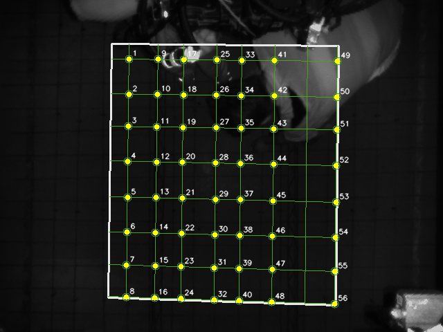
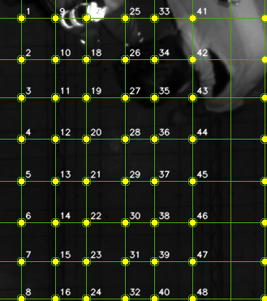
线族明细
[{"angle_deg": 0.0, "line_rhos": [22.0, 73.0, 120.0, 171.0, 223.0, 274.0, 322.0, 368.0], "peak_rhos": [2.0, 15.0, 22.0, 31.0, 35.0, 39.0, 57.0, 69.0, 73.0, 92.0, 104.0, 108.0, 120.0, 124.0, 128.0, 132.0, 156.0, 160.0, 171.0, 185.0, 189.0, 193.0, 197.0, 219.0, 223.0, 227.0, 240.0, 257.0, 261.0, 266.0, 274.0, 286.0, 290.0, 294.0, 299.0, 303.0, 318.0, 322.0, 333.0, 350.0, 354.0, 368.0], "continuous_rhos": [2.0, 15.0, 22.0, 31.0, 35.0, 39.0, 57.0, 69.0, 73.0, 92.0, 104.0, 108.0, 120.0, 124.0, 128.0, 132.0, 156.0, 160.0, 171.0, 185.0, 189.0, 193.0, 197.0, 219.0, 223.0, 227.0, 240.0, 257.0, 261.0, 266.0, 274.0, 286.0, 290.0, 294.0, 299.0, 303.0, 318.0, 322.0, 333.0, 350.0, 354.0, 368.0]}, {"angle_deg": 90.0, "line_rhos": [26.0, 68.0, 106.0, 154.0, 190.0, 237.0, 284.0, 326.0], "peak_rhos": [6.0, 10.0, 26.0, 30.0, 39.0, 43.0, 59.0, 64.0, 68.0, 79.0, 93.0, 106.0, 123.0, 127.0, 142.0, 146.0, 150.0, 154.0, 158.0, 166.0, 170.0, 186.0, 190.0, 207.0, 212.0, 220.0, 237.0, 248.0, 259.0, 280.0, 284.0, 290.0, 294.0, 298.0, 314.0, 326.0], "continuous_rhos": [6.0, 10.0, 26.0, 30.0, 39.0, 43.0, 59.0, 64.0, 68.0, 79.0, 93.0, 106.0, 123.0, 127.0, 142.0, 146.0, 150.0, 154.0, 158.0, 166.0, 170.0, 186.0, 190.0, 207.0, 212.0, 220.0, 237.0, 248.0, 259.0, 280.0, 284.0, 290.0, 294.0, 298.0, 314.0, 326.0]}]
间距筛选
去掉 spacing prune
保留行/列 profile 峰值，不再删除与主间距过近的边缘候选线。
不建议删除：本帧不省时，且可能多线。
mean 52.05 ms
median 52.05 ms
1218 points
drift 227.05 / 378.70 px
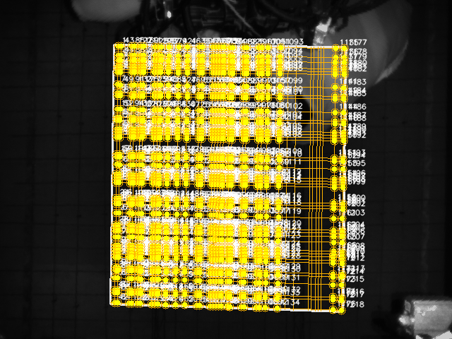
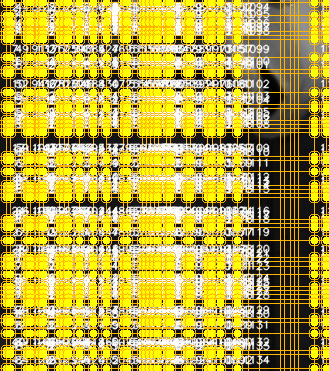
线族明细
[{"angle_deg": 0.0, "line_rhos": [2.0, 15.0, 22.0, 31.0, 35.0, 39.0, 57.0, 69.0, 73.0, 92.0, 104.0, 108.0, 120.0, 124.0, 128.0, 132.0, 156.0, 160.0, 171.0, 185.0, 189.0, 193.0, 197.0, 219.0, 223.0, 227.0, 240.0, 257.0, 261.0, 266.0, 274.0, 286.0, 290.0, 294.0, 299.0, 303.0, 318.0, 322.0, 333.0, 350.0, 354.0, 368.0], "peak_rhos": [2.0, 15.0, 22.0, 31.0, 35.0, 39.0, 57.0, 69.0, 73.0, 92.0, 104.0, 108.0, 120.0, 124.0, 128.0, 132.0, 156.0, 160.0, 171.0, 185.0, 189.0, 193.0, 197.0, 219.0, 223.0, 227.0, 240.0, 257.0, 261.0, 266.0, 274.0, 286.0, 290.0, 294.0, 299.0, 303.0, 318.0, 322.0, 333.0, 350.0, 354.0, 368.0], "continuous_rhos": [2.0, 15.0, 22.0, 31.0, 35.0, 39.0, 57.0, 69.0, 73.0, 92.0, 104.0, 108.0, 120.0, 124.0, 128.0, 132.0, 156.0, 160.0, 171.0, 185.0, 189.0, 193.0, 197.0, 219.0, 223.0, 227.0, 240.0, 257.0, 261.0, 266.0, 274.0, 286.0, 290.0, 294.0, 299.0, 303.0, 318.0, 322.0, 333.0, 350.0, 354.0, 368.0]}, {"angle_deg": 90.0, "line_rhos": [6.0, 10.0, 26.0, 30.0, 39.0, 43.0, 59.0, 64.0, 68.0, 79.0, 93.0, 106.0, 123.0, 127.0, 142.0, 146.0, 150.0, 154.0, 158.0, 166.0, 170.0, 186.0, 190.0, 207.0, 212.0, 220.0, 237.0, 248.0, 259.0, 280.0, 284.0, 290.0, 294.0, 298.0, 314.0, 326.0], "peak_rhos": [6.0, 10.0, 26.0, 30.0, 39.0, 43.0, 59.0, 64.0, 68.0, 79.0, 93.0, 106.0, 123.0, 127.0, 142.0, 146.0, 150.0, 154.0, 158.0, 166.0, 170.0, 186.0, 190.0, 207.0, 212.0, 220.0, 237.0, 248.0, 259.0, 280.0, 284.0, 290.0, 294.0, 298.0, 314.0, 326.0], "continuous_rhos": [6.0, 10.0, 26.0, 30.0, 39.0, 43.0, 59.0, 64.0, 68.0, 79.0, 93.0, 106.0, 123.0, 127.0, 142.0, 146.0, 150.0, 154.0, 158.0, 166.0, 170.0, 186.0, 190.0, 207.0, 212.0, 220.0, 237.0, 248.0, 259.0, 280.0, 284.0, 290.0, 294.0, 298.0, 314.0, 326.0]}]
peak 支撑
去掉 peak 支撑过滤
周期相位给出的候选线不再要求 profile 局部峰值支撑。
不能删除：可能无法稳定产出两组线族。
mean 88.81 ms
median 88.81 ms
56 points
drift 21.66 / 24.70 px


线族明细
[{"angle_deg": 0.0, "line_rhos": [2.0, 52.0, 102.0, 152.0, 202.0, 252.0, 302.0, 352.0], "peak_rhos": [2.0, 12.0, 22.0, 32.0, 42.0, 52.0, 62.0, 72.0, 82.0, 92.0, 102.0, 112.0, 122.0, 132.0, 142.0, 152.0, 162.0, 172.0, 182.0, 192.0, 202.0, 212.0, 222.0, 232.0, 242.0, 252.0, 262.0, 272.0, 282.0, 292.0, 302.0, 312.0, 322.0, 332.0, 342.0, 352.0, 362.0], "continuous_rhos": [2.0, 12.0, 22.0, 32.0, 42.0, 52.0, 62.0, 72.0, 82.0, 92.0, 102.0, 112.0, 122.0, 132.0, 142.0, 152.0, 162.0, 172.0, 182.0, 192.0, 202.0, 212.0, 222.0, 232.0, 242.0, 252.0, 262.0, 272.0, 282.0, 292.0, 302.0, 312.0, 322.0, 332.0, 342.0, 352.0, 362.0]}, {"angle_deg": 90.0, "line_rhos": [39.0, 79.0, 119.0, 159.0, 199.0, 239.0, 279.0, 319.0], "peak_rhos": [9.0, 19.0, 29.0, 39.0, 49.0, 59.0, 69.0, 79.0, 89.0, 99.0, 109.0, 119.0, 129.0, 139.0, 149.0, 159.0, 169.0, 179.0, 189.0, 199.0, 209.0, 219.0, 229.0, 239.0, 249.0, 259.0, 269.0, 279.0, 289.0, 299.0, 309.0, 319.0], "continuous_rhos": [9.0, 19.0, 29.0, 39.0, 49.0, 59.0, 69.0, 79.0, 89.0, 99.0, 109.0, 119.0, 129.0, 139.0, 149.0, 159.0, 169.0, 179.0, 189.0, 199.0, 209.0, 219.0, 229.0, 239.0, 249.0, 259.0, 269.0, 279.0, 289.0, 299.0, 309.0, 319.0]}]
局部 refine
去掉局部峰值 refine
不把周期线整体平移到附近局部峰值；当前主链默认已跳过此阶段。
可跳过：现场消融 0 漂移，节省少量耗时。
mean 784.69 ms
median 784.69 ms
56 points
drift 0.00 / 0.00 px


线族明细
[{"angle_deg": 0.0, "line_rhos": [22.0, 73.0, 120.0, 171.0, 223.0, 274.0, 322.0, 368.0], "peak_rhos": [2.0, 15.0, 22.0, 31.0, 35.0, 39.0, 57.0, 69.0, 73.0, 92.0, 104.0, 108.0, 120.0, 124.0, 128.0, 132.0, 156.0, 160.0, 171.0, 185.0, 189.0, 193.0, 197.0, 219.0, 223.0, 227.0, 240.0, 257.0, 261.0, 266.0, 274.0, 286.0, 290.0, 294.0, 299.0, 303.0, 318.0, 322.0, 333.0, 350.0, 354.0, 368.0], "continuous_rhos": [2.0, 15.0, 22.0, 31.0, 35.0, 39.0, 57.0, 69.0, 73.0, 92.0, 104.0, 108.0, 120.0, 124.0, 128.0, 132.0, 156.0, 160.0, 171.0, 185.0, 189.0, 193.0, 197.0, 219.0, 223.0, 227.0, 240.0, 257.0, 261.0, 266.0, 274.0, 286.0, 290.0, 294.0, 299.0, 303.0, 318.0, 322.0, 333.0, 350.0, 354.0, 368.0]}, {"angle_deg": 90.0, "line_rhos": [26.0, 68.0, 106.0, 154.0, 190.0, 237.0, 284.0, 326.0], "peak_rhos": [6.0, 10.0, 26.0, 30.0, 39.0, 43.0, 59.0, 64.0, 68.0, 79.0, 93.0, 106.0, 123.0, 127.0, 142.0, 146.0, 150.0, 154.0, 158.0, 166.0, 170.0, 186.0, 190.0, 207.0, 212.0, 220.0, 237.0, 248.0, 259.0, 280.0, 284.0, 290.0, 294.0, 298.0, 314.0, 326.0], "continuous_rhos": [6.0, 10.0, 26.0, 30.0, 39.0, 43.0, 59.0, 64.0, 68.0, 79.0, 93.0, 106.0, 123.0, 127.0, 142.0, 146.0, 150.0, 154.0, 158.0, 166.0, 170.0, 186.0, 190.0, 207.0, 212.0, 220.0, 237.0, 248.0, 259.0, 280.0, 284.0, 290.0, 294.0, 298.0, 314.0, 326.0]}]
profile-only
只保留 profile 周期 + spacing
关闭局部 refine、peak 支撑和连续验证，只保留周期线与 spacing prune。
不能用：速度快，但会产生大量假点。
mean 84.45 ms
median 84.45 ms
56 points
drift 21.66 / 24.70 px
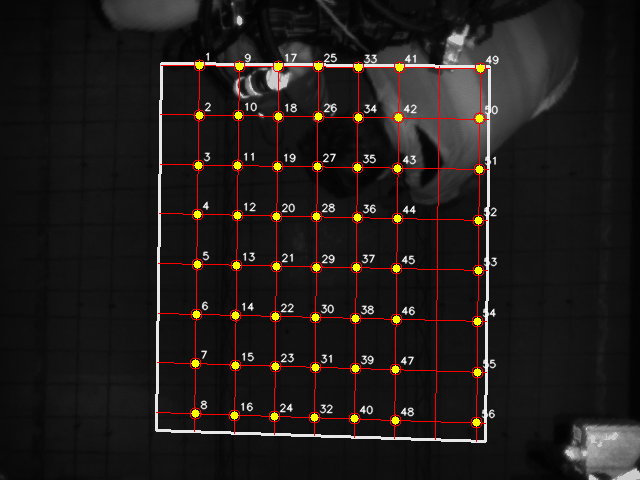
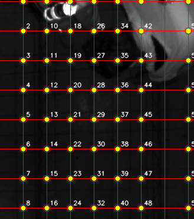
线族明细
[{"angle_deg": 0.0, "line_rhos": [2.0, 52.0, 102.0, 152.0, 202.0, 252.0, 302.0, 352.0], "peak_rhos": [2.0, 12.0, 22.0, 32.0, 42.0, 52.0, 62.0, 72.0, 82.0, 92.0, 102.0, 112.0, 122.0, 132.0, 142.0, 152.0, 162.0, 172.0, 182.0, 192.0, 202.0, 212.0, 222.0, 232.0, 242.0, 252.0, 262.0, 272.0, 282.0, 292.0, 302.0, 312.0, 322.0, 332.0, 342.0, 352.0, 362.0], "continuous_rhos": [2.0, 12.0, 22.0, 32.0, 42.0, 52.0, 62.0, 72.0, 82.0, 92.0, 102.0, 112.0, 122.0, 132.0, 142.0, 152.0, 162.0, 172.0, 182.0, 192.0, 202.0, 212.0, 222.0, 232.0, 242.0, 252.0, 262.0, 272.0, 282.0, 292.0, 302.0, 312.0, 322.0, 332.0, 342.0, 352.0, 362.0]}, {"angle_deg": 90.0, "line_rhos": [39.0, 79.0, 119.0, 159.0, 199.0, 239.0, 279.0, 319.0], "peak_rhos": [9.0, 19.0, 29.0, 39.0, 49.0, 59.0, 69.0, 79.0, 89.0, 99.0, 109.0, 119.0, 129.0, 139.0, 149.0, 159.0, 169.0, 179.0, 189.0, 199.0, 209.0, 219.0, 229.0, 239.0, 249.0, 259.0, 269.0, 279.0, 289.0, 299.0, 309.0, 319.0], "continuous_rhos": [9.0, 19.0, 29.0, 39.0, 49.0, 59.0, 69.0, 79.0, 89.0, 99.0, 109.0, 119.0, 129.0, 139.0, 149.0, 159.0, 169.0, 179.0, 189.0, 199.0, 209.0, 219.0, 229.0, 239.0, 249.0, 259.0, 269.0, 279.0, 289.0, 299.0, 309.0, 319.0]}]
profile-only
只保留 profile 周期原始线
只根据固定行/列 profile 周期相位生成线，所有后续筛选都关闭。
不能用：最快但假点最多。
mean 44.29 ms
median 44.29 ms
999 points
drift 232.47 / 466.62 px
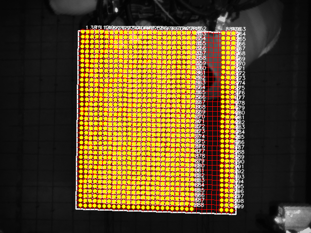
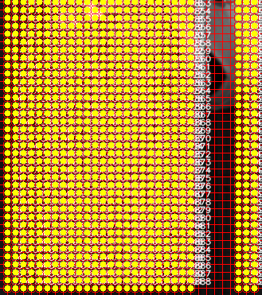
线族明细
[{"angle_deg": 0.0, "line_rhos": [2.0, 12.0, 22.0, 32.0, 42.0, 52.0, 62.0, 72.0, 82.0, 92.0, 102.0, 112.0, 122.0, 132.0, 142.0, 152.0, 162.0, 172.0, 182.0, 192.0, 202.0, 212.0, 222.0, 232.0, 242.0, 252.0, 262.0, 272.0, 282.0, 292.0, 302.0, 312.0, 322.0, 332.0, 342.0, 352.0, 362.0], "peak_rhos": [2.0, 12.0, 22.0, 32.0, 42.0, 52.0, 62.0, 72.0, 82.0, 92.0, 102.0, 112.0, 122.0, 132.0, 142.0, 152.0, 162.0, 172.0, 182.0, 192.0, 202.0, 212.0, 222.0, 232.0, 242.0, 252.0, 262.0, 272.0, 282.0, 292.0, 302.0, 312.0, 322.0, 332.0, 342.0, 352.0, 362.0], "continuous_rhos": [2.0, 12.0, 22.0, 32.0, 42.0, 52.0, 62.0, 72.0, 82.0, 92.0, 102.0, 112.0, 122.0, 132.0, 142.0, 152.0, 162.0, 172.0, 182.0, 192.0, 202.0, 212.0, 222.0, 232.0, 242.0, 252.0, 262.0, 272.0, 282.0, 292.0, 302.0, 312.0, 322.0, 332.0, 342.0, 352.0, 362.0]}, {"angle_deg": 90.0, "line_rhos": [9.0, 19.0, 29.0, 39.0, 49.0, 59.0, 69.0, 79.0, 89.0, 99.0, 109.0, 119.0, 129.0, 139.0, 149.0, 159.0, 169.0, 179.0, 189.0, 199.0, 209.0, 219.0, 229.0, 239.0, 249.0, 259.0, 269.0, 279.0, 289.0, 299.0, 309.0, 319.0], "peak_rhos": [9.0, 19.0, 29.0, 39.0, 49.0, 59.0, 69.0, 79.0, 89.0, 99.0, 109.0, 119.0, 129.0, 139.0, 149.0, 159.0, 169.0, 179.0, 189.0, 199.0, 209.0, 219.0, 229.0, 239.0, 249.0, 259.0, 269.0, 279.0, 289.0, 299.0, 309.0, 319.0], "continuous_rhos": [9.0, 19.0, 29.0, 39.0, 49.0, 59.0, 69.0, 79.0, 89.0, 99.0, 109.0, 119.0, 129.0, 139.0, 149.0, 159.0, 169.0, 179.0, 189.0, 199.0, 209.0, 219.0, 229.0, 239.0, 249.0, 259.0, 269.0, 279.0, 289.0, 299.0, 309.0, 319.0]}]